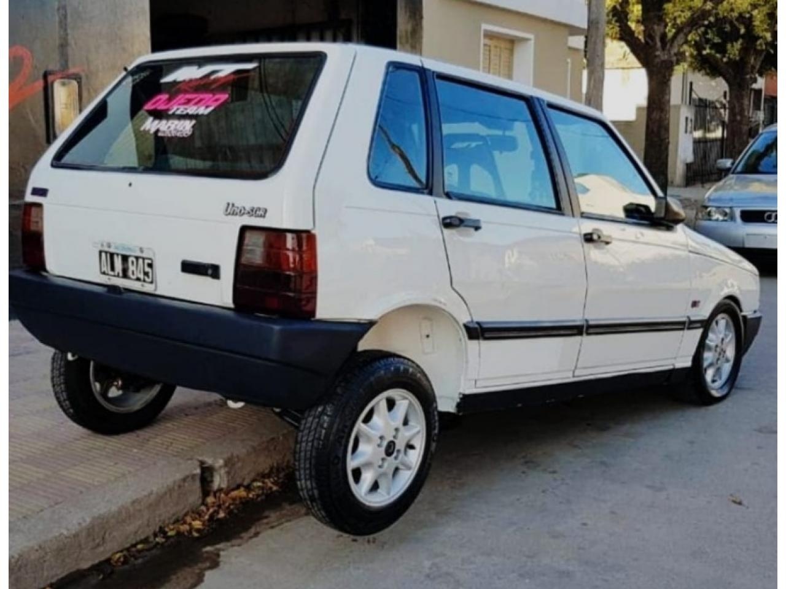

FIAT UNO
El Fiat Uno es un automóvil del segmento B producido por el fabricante de automóviles italiano Fiat. Se trató de un automóvil bicuerpo que fue fabricado a lo largo de tres generaciones. La primera de ellas fue presentada en Italia en 1983 como reemplazante del Fiat 127 y se produjo allí hasta 1990. Se trató de un automóvil bicuerpo que presentaba un diseño que conjugaba líneas rectas en estilo flecha. Esta generación fue presentada un año después en Brasil, donde hizo lo propio con el local Fiat 147 y se mantuvo en producción hasta el año 2013, recibiendo todo tipo de cambios, tanto estéticos como mecánicos. Parte de su producción en Sudamérica también tuvo lugar en Argentina, donde se fabricó entre 1989 y 2005.
La segunda generación del Uno fue presentada exclusivamente en Italia, siendo conocida como 70S. En esta generación, el Uno recibió un fuerte retoque en su diseño, presentando ligeras curvaturas en su rectilínea forma original. Esta versión se produjo para abastecer al mercado europeo (aunque algunas unidades fueron importadas a Sudamérica), hasta el año 1995, en el cual fue reemplazado por el Fiat Punto.
Finalmente, la tercera generación del Uno fue presentada en el año 2013 en Brasil, con el objetivo de comercializarse en Sudamérica. En este mercado, el Uno supo mantenerse vigente en su primera generación, aún después del lanzamiento del que fue catalogado como su sucesor, el Fiat Palio con el cual convivió. La tercera generación fue producida y desarrollada a partir de la plataforma del Fiat Panda. Esta versión fue colocada como entrada de gama y fue vendida hasta el año 2017, cuando se produjo el lanzamiento del aún más económico Fiat Mobi. Sin embargo, en 2019 fue retomada su producción, siendo relanzado como Fiat Uno Way, a la vez de posicionarse como modelo intermedio entre el mencionado Mobi y el Fiat Argo.
